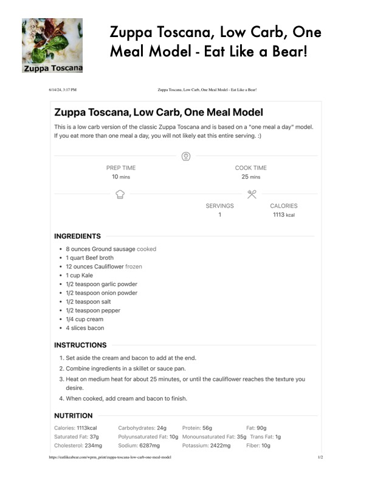

Zuppa Toscana, Low Carb, One

Original cookbook page 615
Ingredients
- * 8 ounces Ground sausage cooked
- * 1 quart Beef broth
- * 12 ounces Cauliflower frozen
- * 1cup Kale
- * 1/2 teaspoon garlic powder
- * 1/2 teaspoon onion powder
- * 1/2 teaspoon salt
- * 1/2 teaspoon pepper
- * 1/4 cup cream
- * 4slices bacon
Instructions
- Set aside the cream and bacon to add at the end.
- Heat on medium heat for about 25 minutes, or until the cauliflower reaches thi desire.
- When cooked, add cream and bacon to finish. NUTRITION Calories: 1113kcal Carbohydrates: 24g Protein: 56g Fat: 90g Saturated Fat: 37g Polyunsaturated Fat: 10g Monounsaturated Fat: 35g Trans Fa Cholesterol: 234mg Sodium: 6287mg Potassium: 2422mg Fiber: 10g
Recipe #615 from collection